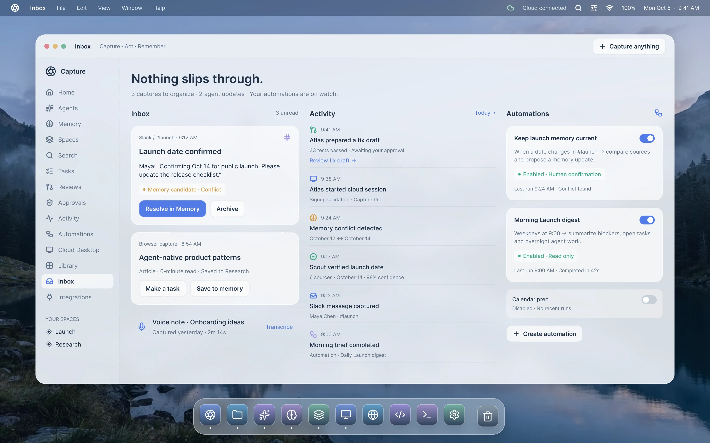

What Capture is
A personal context workspace that bridges chaotic multi-source capture (web links, PDFs, screenshots, thoughts) and AI reasoning. It preserves the original files while indexing semantic relationships.
The Personal Inbox
A zero-friction landing pad for anything you encounter throughout the day. Hit a global shortcut to capture without having to categorize or decide on a folder structure in the moment.
Structured Spaces
Dedicated project environments where documents, research notes, screenshots, and references live together. Spaces provide the exact boundaries within which AI reasoning operates.
The Space Agent
An embedded intelligence that acts as an analytical collaborator. It arranges files into coherent themes, detects discrepancies across documents, and crafts drafts grounded in your sources.
Search and Retrieval
Deep semantic retrieval that searches across full-text documents, image OCR transcripts, code fragments, and web bookmarks with millisecond latency.
Agent Action History & Undo
AI should never be an uncontrollable black box. Every file grouping, summary, or structural modification created by the agent is logged in a linear history and can be reversed with one click.
External AI Access (MCP)
Expose permitted Space context to Claude Desktop, Cursor, ChatGPT, and custom agents using standard Model Context Protocol connectors.
Desktop & Web Companion
Built natively for macOS to support system-wide keystrokes and local caching, complemented by a fast companion web app for reviewing Spaces on the go.
A fundamentally different paradigm
Traditional file chaos vs. unified contextual intelligence.
Ready to work with unified context?
Join the private beta cohort and experience persistent agent context.
Join the waitlist →